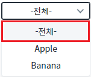
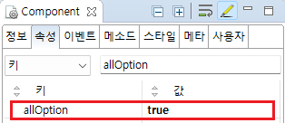

SelectBox의 'allOption' 속성을 사용하여 '전체' 항목을 표시한 예제입니다. 항목의 'label'은 '-전체-'이고, 'value'는 'all'입니다.
SelectBox의 전체 항목 표시하기
1
컴포넌트의 항목을 확인합니다.
항목의 최상단에 '전체' 항목이 표시됩니다. 항목의 문자열을 '-전체-'로 표시됩니다.
Image 1.브라우저(Chrome) 실행 예시

컴포넌트의 오른쪽에 선택된 항목의 value가 표시됩니다. '전체' 항목은 'all'이 표시됩니다.
1
'allOption' 속성을 'true'로 설정합니다.
[필수] allOption="true"
[default: false, true] 전체 항목의 표시 여부를 설정합니다.
Image 2.웹스퀘어 스튜디오의 Component View - 속성 설정 예시

Example 1.Source
<xf:select1 allOption="true"> <!-- 중략 --> </xf:select1>
allOption